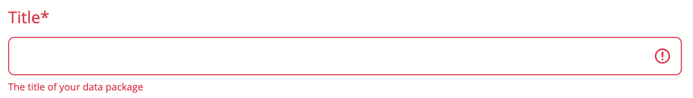
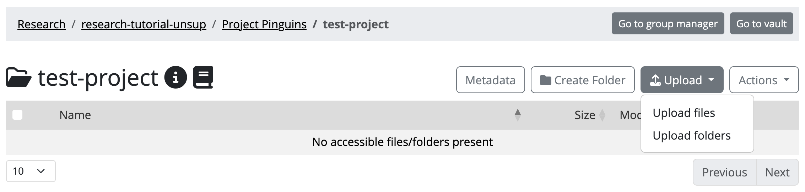
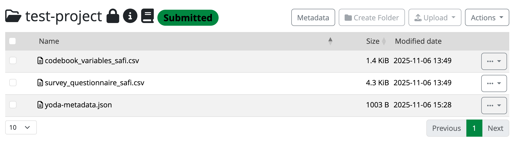
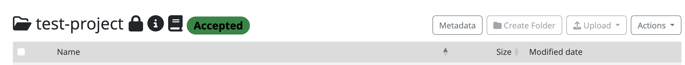

How do you retrieve data from the Vault into Yoda’s Research
area?
Objectives
Demonstrate how to include useful metadata in Yoda
Show how to upload data in Yoda
Operate the cycle of securing, retrieving, and updating data
independently in Yoda
Introduction
In this scenario we are going to pretend that you are a researcher
who has been collecting data, and wants to freeze it in the Vault. You
will be assuming the role of a seasoned data practitioner who will
complete the process on their own, without any data steward’s
supervision or intervention.
By the end of the exercise you will know how to
advertise a dataset in Yoda’s Vault, taking care of the
metadata and the data.
You can work with any dataset you may have already on your laptop, or
you can pretend that you have one of your own by downloading something
from the Internet. For example, you can use the Data portal from the
Gemeente Amsterdam or one of the DANS Data
Stations to search for data that may appeal to you (please verify
the dataset’s license before you use it!).
Preparing another working place in the Research space
Remember that you have your own Project folder within the
research-tutorial-unsup folder in the Research space. You
may still have the folder with the data that you found in the previous
exercise. You will now be working with a different dataset, so you can
best create a working folder directly in your Project folder.
Please do so now. Give it a suitable name for the dataset you will be
working with. We will refer to this new folder as the dataset
folder during this exercise. In order to accomplish this you can
follow analogous steps as those you followed during the previous
exercise.
Filling in the metadata
The dataset’s metadata is crucial when you are working within RDM
best practices. It will ensure that your dataset is reusable in the
future (for others but also for your future self!). So you can best
start with it, even before the data exists in Yoda. Let us tackle that
right now.
In the Yoda interface, navigate to the
research-tutorial-unsup folder, then your Project folder,
and then to the dataset folder that you have prepared for this
exercise.
Once you are in the dataset folder, click on the Metadata button
to start editing the metadata.
Callout
Now take all the time you need to think about what is reasonable
metadata, and make sure you write plenty of it. Recall the feeling when
you were searching for data in the previous exercise.
For inspiration, what would have helped you to be more effective
in finding the dataset? Apply that now to facilitate that others will
find your dataset both when they know it is there, and when they do not
know it is there. This last case describes a data
discovery scenario.
If you are working with a dataset which is published somewhere
else (e.g., like the Gemeente Amsterdam or DANS), you can draw ideas
from the metadata that you already actually see in that portal.
For datasets that involve spatial or temporal information, make
sure you fill in appropriate intervals and location descriptors. You may
look at the previous exercise’s dataset to see how you can include
multiple location descriptors.
Think of the data policies from your research field or your
institution. How could you use the form to add metadata that will
fulfill those policies’ requirements?
Pay special attention to filling in a reasonable value for the
Version field of the metadata. We recommend that you enter a number.
Remember the value you enter.
Once you are ready, click on the Save button. If the form is
still open, you may want to scroll all the way up and start going down
slowly while you verify for error messages asking you to fill in
mandatory fields.

Example of missing information in a mandatory
metadata field
You can now see that there is a file in your folder called
yoda-metadata.json. That is where Yoda stores the metadata
in a format that you can bring along as a companion to the actual
data.
If you have any colleagues in the course, now would be a good
moment to ask them to verify your metadata and engage in a little
discussion to see if what you have written is clear to others.
Uploading data
Now that you have the metadata, you can upload files with actual data
from your laptop. For this exercise and simplicity’s sake, it will be
enough to upload one or two files no larger than a few megabytes as
though they are a full dataset; adding more would be overkill today.
In order to upload a file:
In the Yoda interface, navigate to the
research-tutorial-unsup folder, then your Project folder,
and then to the dataset folder that you have prepared for this
exercise.
Once you are in the dataset folder, click on the Upload
button.

Yoda’s upload button
Your browser’s file exploring dialog will pop up. You can
navigate there through your laptop’s folders to locate the data files
you want to upload. Locate those files.
Double click on the file you want to upload (you can also upload
multiple files at once or an entire folder). Yoda will display a
progress bar which will be filling up as the file uploads. When the
upload is ready, you will see an OK.
Completed uploads in the portal
Close the progress bar dialog, and you will be back on your
dataset folder. You should now see your file(s) listed there.
If you want to play with a multi-file dataset, you can repeat the
upload process with more files.
Now you have made the files available to Yoda in the Research space.
You are ready to freeze the dataset and make it available for others to
use within this Yoda instance!
Submitting the dataset to the Vault
Now that you have a dataset which includes its metadata and the data
itself, you can initiate the flow that will place the frozen version of
the dataset in the Vault. This is going to be an unsupervised process
during this exercise, simulating a situation where you are an expert
data practitioner. This means that, you are yourself in charge of not
only submitting but also accepting the dataset in the Vault.
In the Yoda interface, navigate to the
research-tutorial-unsup folder, then your Project folder,
and then to the dataset folder that you have prepared for this
exercise.
Once you are in the dataset folder, click on the Actions button,
and select the Submit option.
After submitting, you will see that a green label appears next to
the folder’s name title, indicating that the folder is submitted to the
Vault. As you can see, you cannot make changes to the data or metadata
anymore (unless you click the Unsubmit option on the Actions
button).

The datapackage is now submitted to the
Vault
Because you have datamanager rights in this category, you accept
the submission to the Vault yourself. All you have to do is click on the
Actions button, and select the Accept option.
After accepting, you will see that a new green label appears next
to the folder’s name title. After a few minutes (depending on the file
sizes and how busy the server may be), it will change from “Accepting”
to “Accepted”. 
Verify your dataset is in Vault
Now you must see your dataset listed including the [Unix epoch] in
the vault-tutorial-unsup folder. Verify that this is the
case.
Congratulations! You have just successfully placed a frozen version
of your dataset in the Vault.
Deleting the working copy of the dataset
To simulate a real situation, you can now rely on the Vault to keep
your dataset for you, so you can remove it from your working area. If
you try to remove the dataset folder directly, Yoda may complain
indicating that it is not empty. In that case, you will have to delete
the files inside it first.
In the Yoda interface, in the Research tab, navigate to the
research-tutorial-unsup folder, and then to your Project
folder.
Once you are in the Project folder, you can click on the three
dots button to the right of the dataset folder that you have prepared
for this exercise, and select Delete. Accept the verification step to
delete the folder.
Done! The working copy of the dataset is now history. Long live the
dataset in the Vault!
Recovering the dataset from the vault
Now we are going to pretend that a year has passed since you last
worked with your dataset. In the meantime you have decided you want to
add a new file describing something related to the procedure, to the
dataset (e.g, a README file). In your view, this is simply a version
upgrade, so we should reuse the same original dataset. For that, you
will need to make a working copy out of the version that you had stored
in the Vault a year ago.
Bring now a copy of the dataset from the Vault to your Project
folder, following the same steps you applied during the previous exercise.
You can locate your dataset by searching for it, or by navigating to the
Vault tab, then the vault-tutorial-unsup folder, and
scrolling through the datasets that may be there.
You will have completed this exercise once you can see a dataset
folder within your Project folder in the Research area. This is how it
could look:
Screenshot of a datapackage copied back into
Research (including Unix epoch)
Modifying the dataset as a new version
Navigate to the dataset folder within your Project folder in the
Research area. You will see that if you click the Metadata button the
metadata will be empty. Remember: you will have to navigate into the
folder called original. Then you can edit the metadata
(i.e.: the metadata will be there already). Increase the version number
now, and save the changes to the metadata.
Prepare a new README file on your laptop that you want to upload into
this dataset folder. Upload it now to the original
folder.
Submitting the new version to the Vault
As you can see you have had to work in the original
folder, but that is likely an unsuitable name for any worthy dataset.
The proper name will be that of the original dataset folder. Rename now
the original folder to that of the dataset folder (you will
need to step out of the original folder and use the three
dots button next to it to find the Rename option).
Now you can submit to the Vault this new version of your dataset.
You will have completed this exercise once you can see your two
dataset folders named the same in the Vault (with different Unix epochs
attached).
Food for thought
Well done! You have now completed this section. Feel free to move on
to the next exercise at your own pace, but make sure you have answered
the questions below to verify that you have understood the unsupervised
flow to secure datasets in the Vault.
Callout
You must have realised by now that proper metadata management is key,
but also very difficult to do properly. Yoda simplifies this effort a
bit by allowing only metadata to be added to folders.
Question: Can you think of situations where this approach will feel
like a limitation, instead of a blessing? How would you tackle those,
then?
Yoda also simplifies metadata management by allowing you to fill in a
nice predefined form.
Could you think of a need for your institution to customise that
form? Or maybe customise the form per research discipline?
Can you find something in the Yoda
documentation that points to where this could be arranged? (hint:
metadata schemas)
When you are defining metadata in the current form, you can probably
see that there is a field for tags.
What are these useful for?
What is in your own words a good definition for the Vault? What is it
useful for?
Key Points
You can add metadata to your project in the Research area
You can submit a dataset to the Vault to secure a frozen version of
your dataset
Copy a datapackage from Vault to Research space to continue working
with it
 Completed uploads in the portal
Completed uploads in the portal